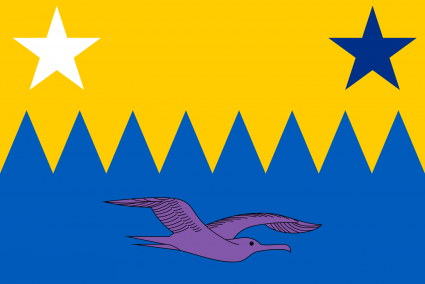

|
Novaria1 is a nation that prides itself on its pursuit of progress in various fields. It has a highly educated and intelligent population, with a strong emphasis on IT, science and health. It also supports environmental initiatives, such as renewable energy, recycling and conservation. Novaria1's government meets regularly in the capital city of Nevrakon, where it debates and decides on matters of state. The average income tax rate is 38.6%, but the wealthy pay much more, as the government believes in redistributing wealth to fund its ambitious projects. The leader of Novaria1 is Fredrik Dalgaard, a visionary politician who has led the country for the past year. Novaria1 has a powerhouse economy, ranking among the top in the world in terms of GDP, innovation and competitiveness. However, it also has few civil rights and average political freedom, as in the past, the leader made very bad decisions, that worsened the rights and freedoms. |
Facts
Flag:  Capital: Nevrakon Current leader: Fredrik Dalgaard Currency: Novarin National Animal: guinea pig |